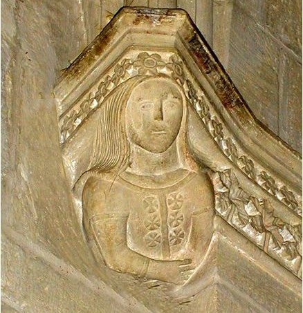
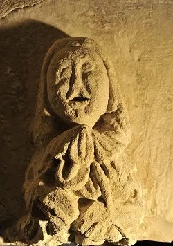
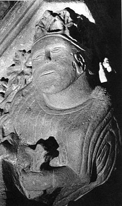
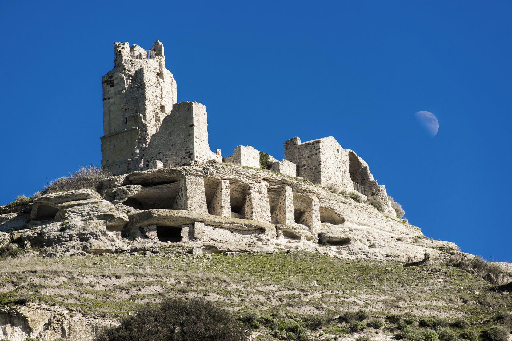
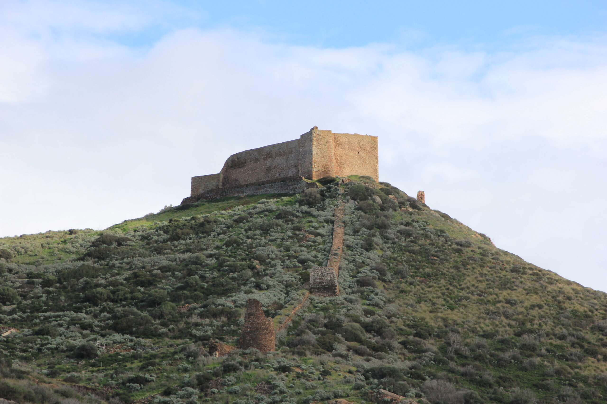
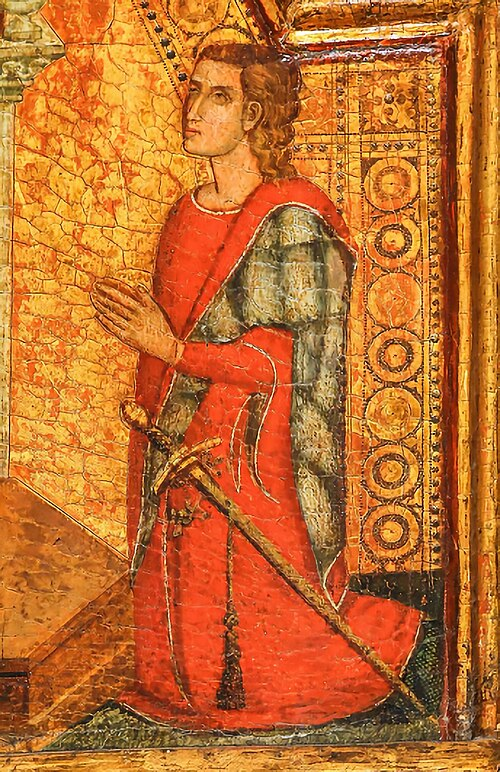
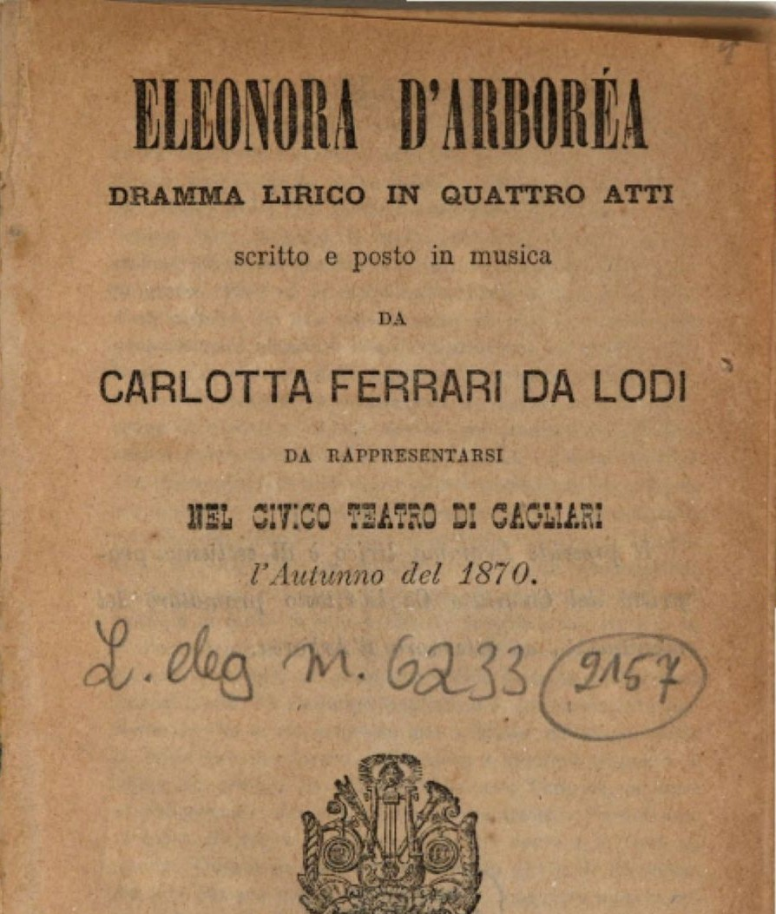
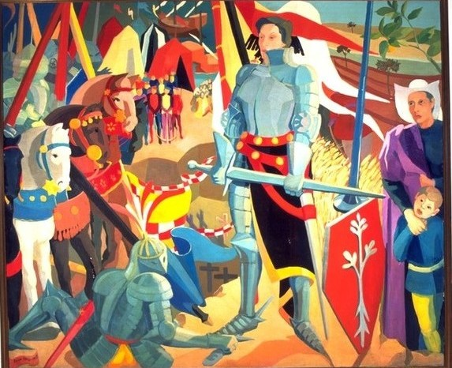
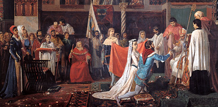
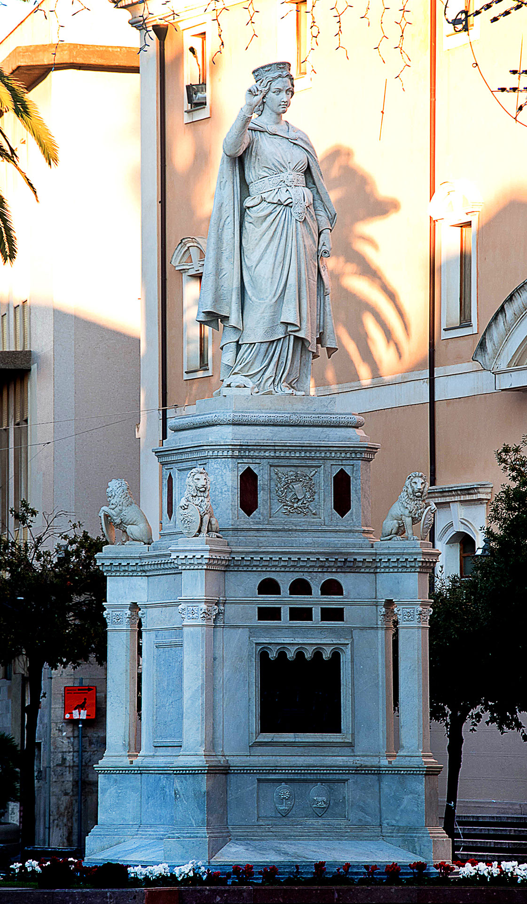

Home
Introduzione
Home
Introduzione
Ordina per

Autore: sconosciuto
Data: 1390 (ca.)
Luogo: San Gavino Monreale


Autore: sconosciuto
Data: 1390 (ca.)
Luogo: San Gavino Monreale

Autore: Eleonora d'Arborea
Curatore: Giovanni Maria Mameli de' Mannelli
Editore: Editrice Archivio Fotografico Sardo
Data: 2007



Autore: Maestro delle tempere francescane
Data: 1339-1344
Luogo di conservazione: Chiesa di San Nicola, Ottana

Autore: Carlotta Ferrari
Data: 1870
Luogo di conservazione: Biblioteca Statale della Baviera

Autore: Antonio Benini
Data: 1860 (ca.)
Luogo di conservazione: Palazzo degli Scolopi, Oristano

Autore: Foiso Fois
Data: 1957
Luogo di conservazione: Pinacoteca Nazionale, Cagliari

Autore: Antonio Benini
Data: 1860 (ca.)
Luogo di conservazione: Palazzo degli Scolopi, Oristano

Autore: Ulisse Cambi
Data: 1881
Luogo: Piazza Eleonora, Oristano